AfricaShort

Amandacongdon-Fantasy Of Flowers - iPod version
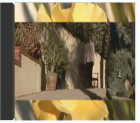
Andy and Denise Wedding - Track 1
Barbershop

bells

ClappingUkulele_Ending
ClappingUkulele_Loop

DooWop1950

Gregorian

MiddleEastShort

Moby Dick
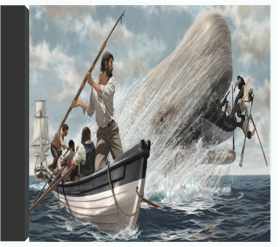
Monsters University (2013)
My Irreplaceable (Dj Lobsterdust Mas
percussion intro 44khz-16bit

String Theme

Western Michigan Hockey game, February 2009-Mobile
WheresMatt-2006
WheresMatt-2008
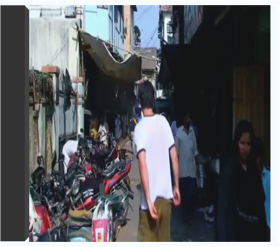
Zydeco

O Come, All Ye Faithful
Abandon Kansas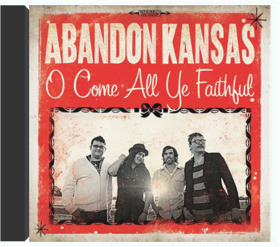
Abba Gold
Abba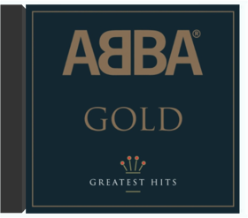
Bruch: Scottish Fantasy
Akiko Suwanai, Neville Marriner; Academy Of St. Martin In The FieldsHaydn: 3 Piano Sonatas, Fantasia, Adagio In F
Alfred Brendel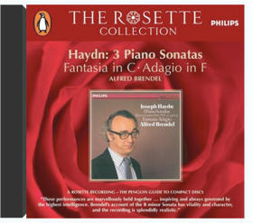
Liszt: Sonata In B Minor, Funérailles, Etc.
Alfred BrendelSchumann: Kreisleriana; Kinderszenen; Fantasiestücke
Alfred Brendel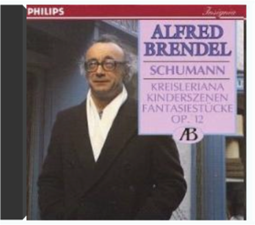
Mozart: Piano Concertos No. 21 & 23
Alfred Brendel, Neville Marriner; Academy Of St. Martin In The FieldsPärt: Tabula Rasa
Alfred Schnittke, Tatjana Gridenko, Gidon Kremer; Saulius Sondeckis: Lithuanian Chamber Orchestra
Brahms: Hungarian Dances 1- 21
Alfred Scholz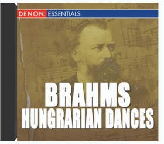
Smooth criminal
Alien Ant Farm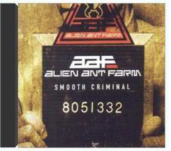
All I Want
Aliqua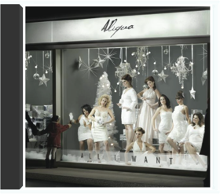
Weilerstein: Works For Cello and Piano
Alisa Weilerstein, Vivian Hornik Weilerstein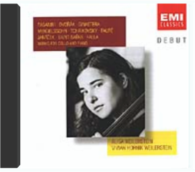
iTunes Holiday Sampler
Amy Grant, David Archuleta, Sarah McLachlan, Barry Manilow, Meaghan Smith, Mannheim Steamroller, Lady Antebellum, Toby Keith, Rascal Flatts, Wynonna, Mexicani Marimba Band, Weezer, Glasvegas, Stephen Colbert, Vince Guaraldi Trio, Charlotte Church, Kirov Orchestra & Valery Gergiev, Aretha Franklin, Musiq Soulchild, The Lonesome TravelersMussorgsky: Pictures at an Exhibition
Anatol UgorskiViaggio Italiano
Andrea BocelliHymn: A Musical Christmas Card
Andreas VollenweiderSchubert: Impromptus D 899 & D 935
Andrei GavrilovShostakovich: Symphony #8
Andrew Litton: Dallas Symphony OrchestraA Book Like This
Angus & Julia Stone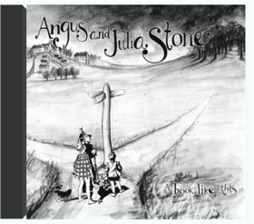
Verdi: Requiem [Disc 2]
Anna Tomowa, Agnes Baltsa, Etc., Herbert Von Karajan; Vienna Philharmonic Orchestra, Vienna Singverein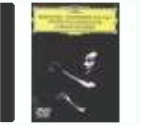
Carmen-Fantasie
Anne-Sophie Mutter, James Levine; Vienna Philharmonic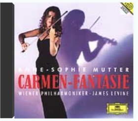
Mendelssohn; Brahms: Violin Concertos
Anne-Sophie Mutter; Herbert Von Karajan: Berlin Philharmonic Orchestra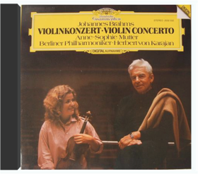
Annie - The Broadway Musical (30th Anniversary Production Cast Recording)
Annie - 30th Anniversary Production CastRachmaninov: Sonata No. 2 - Corelli Variations
Antonio Pompa-BaldiEcotone
Aperus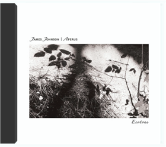
Tumbleweed Obfuscated By Camera Failure
Aperus
Reflektor
Arcade Fire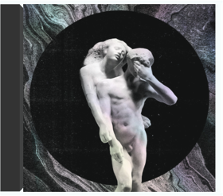
Piano Transcriptions
Arcadi VolodosAlexander Scriabin Etudes
Arthur GreeneThe Chopin Collection: Ballades & Scherzi
Arthur Rubinstein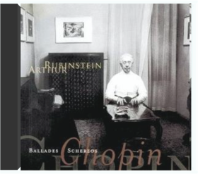
Alina
Arvo Pärt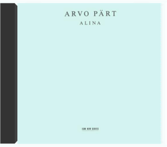
Santa Loves To Boogie
Asleep at the Wheel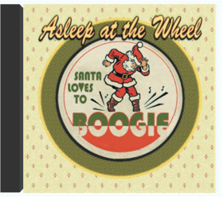
New Year's Eve Mix - Single
AviciiHome For Christmas
Barlowgirl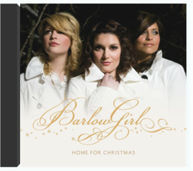
Rachmaninov: Piano Concerto No. 2, Preludes
Barry Douglas, Michael Tilson Thomas; London Symphony OrchestraSgt. Pepper's Lonely Hearts Club Band
The Beatles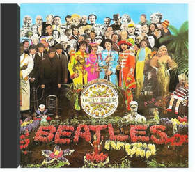
Beethoven: Triple Concerto, Choral Fantasy
Beaux Arts Trio, Kurt Masur; Leipzig Gewandhaus Orchestra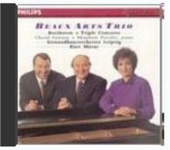
Symphony No. 9 (Scherzo)
Beethoven, Ludwig van (1770-1827)
One, Two, Three, GO! - Single of the Week
BelanovaGet Up! (Deluxe Version)
Ben Harper & Charlie MusselwhiteFormer Lives
Benjamin Gibbard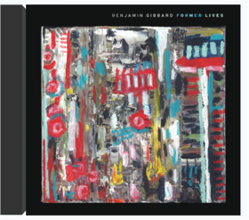
Everything You Want For Christmas
Big Bad Voodoo DaddyThe Essential Billy Joel
Billy Joel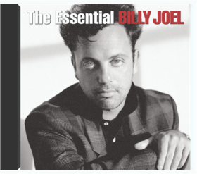
The E.N.D. (The Energy Never Dies)
The Black Eyed Peas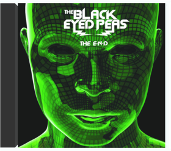
Audio
Blue Man Group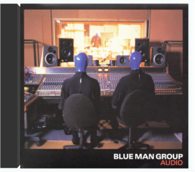
I Feel Love
Blue Man Group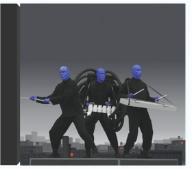
The Best Of [Disc 1]
Blur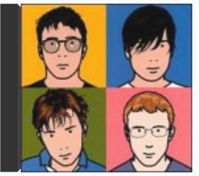
Blood On The Tracks
Bob Dylan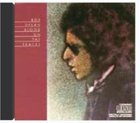
Highway 61 Revisited
Bob Dylan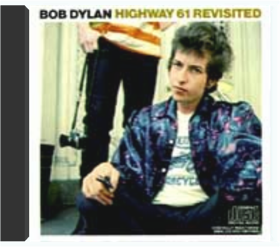
Legend
Bob Marley & The WailersRachmaninov: Piano Sonata No. 1; Chopin Variations
Boris BerezovskyShostakovich: Complete String Quartets
Borodin QuartetChristmas Cheer
The Boxmasters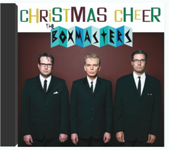
Mutual Friends
Boy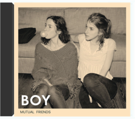
The Night Before Christmas
Brandon Heath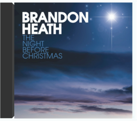
The Essential Bruce Springsteen
Bruce Springsteen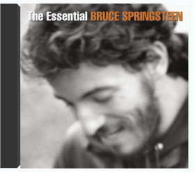
Bête Noire
Bryan Ferry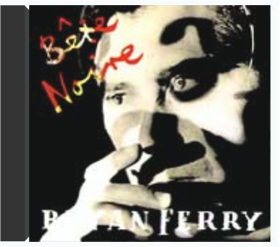
Boys And Girls
Bryan Ferry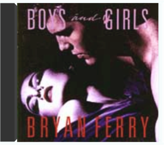
The Jazz Age
Bryan Ferry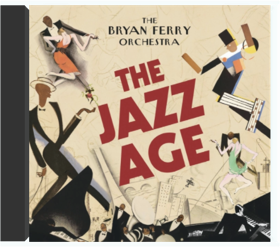
Hear the Angel Voices
Carl Tanner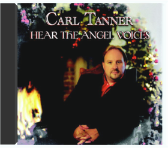
Christmas in Bethlehem
Carola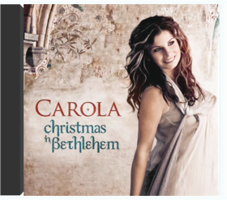
Father Christmas
Cary Brothers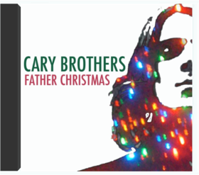
Peace On Earth
Casting Crowns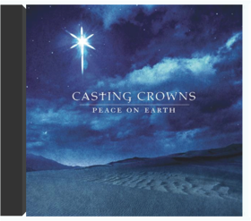
Naomi
The Cave Singers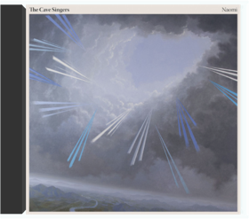
If You Love Me (Se Tu M'ami ), 18th-Century Italian Songs
Cecilia Bartoli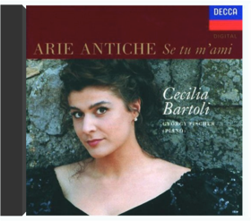
Italian Songs: Beethoven, Schubert, Mozart, Haydn
Cecilia Bartoli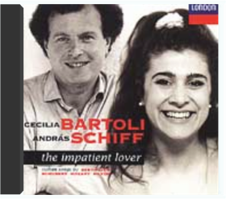
Mozart Arias
Cecilia BartoliRossini Arias
Cecilia Bartoli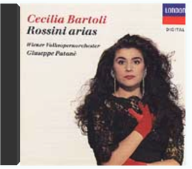
Rossini Heroines
Cecilia Bartoli
Home for Christmas
Celtic WomanA Chanticleer Christmas
Chanticleer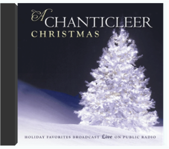
Ding Dong! Merrily On High - Single of the Week
Chanticleer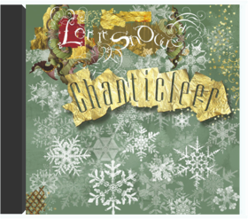
Handel: Water Music
Charles Mackerras; Orchestra Of St. Luke's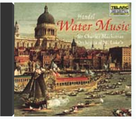
San Patricio
The ChieftainsBartók: Violin Sonatas
Christian Tetzlaff, Leif Ove Andsnes
Bach: Morimur
Christoph Poppen, Hilliard Ensemble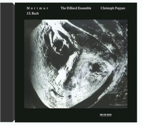
Brahms: Symphony No. 3, Op. 90 & Op. 81
Christoph Von Dohnanyi; Cleveland OrchestraBrahms Symphonie No. 3 In F-Dur, Op. 90/Tragische Ouverture, Op. 81
Christoph Von Dohnanyi: Cleveland OrchestraJohannes Brahms: Symphony No.3 in F major, Op.90; Symphony No.4 in E minor, Op.98
Christoph Von Dohnanyi: Cleveland OrchestraStarfish
The ChurchThe Civil Wars
The Civil WarsMedusa
Clan Of XymoxLiszt: Sonata in B minor u.a.
Clifford CurzonBlue Bell Knoll
Cocteau TwinsI Predict a Graceful Expulsion
Cold SpecksSibelius: Symphonies
Colin Davis; Boston Symphony Orchestra
Bach: Trumpet And Organ
Colm Carey, Alison Balsom, Mark CaudleDisintegration
The CureKiss Me, Kiss Me, Kiss Me
The CureMixed Up
The CureStaring At The Sea: The Singles 1979-1985
The CureWish
The CureThe First Christmas Morning
Dan FogelbergVery Merry Christmas (Amazon MP3 Exclusive) [+digital booklet]
Dave BarnesSolo Piano Works
David ArdenBach: Complete Toccatas & Fugues
David SchraderA Passage In Time
Dead Can DanceMad, Bad And Dangerous To Know
Dead Or AliveThe Greatest Hits Of Dean Martin
Dean MartinThe Rake's Song - Single
The DecemberistsPärt: Tabula Rasa
Dennis Russell Davies: Stuttgart Chamber OrchestraBehind The Wheel
Depeche ModeBlack Celebration
Depeche ModeCatching Up With Depeche Mode
Depeche ModeDelta Machine (Deluxe Version)
Depeche ModeViolator
Depeche ModeEarly Chamber Music of Ignatz Waghalter
Detroit-Windsor Chamber Ensemble
Glad Rag Doll (Deluxe Edition)
Diana KrallLife For Rent
DidoMy Feet Can't Fail Me Now
Dirty Dozen Brass BandWomen & Songs
DNA Feat. Suzanne VegaAll You Need Is Now - Single
Duran DuranTheir Greatest Hits
The EaglesSongs To Learn & Sing
Echo & The BunnymenMix
EelsSuperior Sound Of [1970-1975]
Elton JohnKing Of America
Elvis CostelloHaydn: Piano Sonatas Nos. 32, 47, 53 & 59.7
Emanuel AxMozart: The 'Haydn' Quartets [Disc 1]
Emerson String Quartet
The Cross Of Changes
EnigmaThe Memory Of Trees
EnyaThe Very Best Of Enya (Deluxe - Amazon Exclusive)
EnyaABBA-esque
ErasureCrackers International
ErasureThe Innocents
ErasureOld Sock
Eric ClaptonDebussy: Images, La Mer, Etc.
Esa-Pekka Salonen; Los Angeles Philharmonic OrchestraBeethoven, Franck, Brahms
Evgeny KissinBrahms
Evgeny KissinChopin: 4 Ballades, Berceuse, Barcarolle, Scherzo #4
Evgeny KissinChopin: Vol. 2
Evgeny KissinKissin In Tokyo
Evgeny Kissin
Prokofiev: Piano Concertos Nos.1 & 3
Evgeny KissinRachmaninov: Piano Concerto #3, Vocalise, Prelude, Op. 23/2
Evgeny KissinSchubert: "Wanderer" Fantasia / Brahms: Fantasien op.116 / Liszt: Hungarian Rhapsody No.12
Evgeny KissinClassical Touch - Nutcraker Highligths, Romeo And Juliet
Evgeny Vovkushansky: Russian RTV Orchestra Of St. Petersburg
Dance (RED) Save Lives, Vol. 2
Felix CartalFleet Foxes
Fleet FoxesMix
Folk ImpressionYou're Here
Francesca BattistelliTonight: Franz Ferdinand
Franz FerdinandOrgan Music by Famous Opera Composers
Franz Haselbock
Chopin: Piano Works, Vol. 1
Frédéric Chopin
Back Catalogue
Front 242Piano Quartets No.1 & No.2 - Emanuel Ax/Isaac Stern/Jaime Laredo/ Yo-Yo Ma
Gabriel FauréPraan
Garry SchymanTrust - EP
GenerationalsBeethoven: The Nine Symphonies
Georg Solti: Chicago Symphony OrchestraBeethoven: The Nine Symphonies
Georg Solti: Chicago Symphony Orchestra
Prism Classics PLD 1234 - Tchaikovsky: Symphony No. 5 in E minor; Capriccio italien
Georgian Simi Festival Orchestra - Nodar Tsatishvili
Hovhaness: Mysterious Mountain, And God Created Great Whales
Gerard Schwarz; Seattle Symphony OrchestraGergorian Chant
Gergorian ChantSince Way Back
Gerry HundtPärt: Tabula Rasa
Gidon Kremer, Keith Jarrett
Vasks: Symphonie Pour Cordes, 'Voices'
Gidon Kremer; Kremerata BalticaMendelssohn: Concerto For Violin, Piano, and String Orchestra
Gidon Kremer; Martha Argerich; Orpheus Chamber OrchestraMendelssohn: Concertos / Gidon Kremer, Martha Argerich & Orpheus Chamber Orchestra
Gidon Kremer; Martha Argerich; Orpheus Chamber OrchestraSibelius & Tchaikovsky: Violin Concertos
Gil Shaham, Giuseppe Sinopoli; Philharmonia OrchestraDvorák For Two
Gil Shaham, Orli ShahamAll Day
Girl TalkBach: French Suites
Glenn GouldBach: The Art of the Fugue, Fugues 1 - 9 (Glenn Gould - The Anniversary Edition)
Glenn GouldImages
Glenn GouldBlue Sunshine
The GloveReich: Music for 18 Musicians
Grand Valley State University New Music EnsembleLost Channels
Great Lake SwimmersInternational Superhits!
Green DayThe Weatherman
Gregory Alan IsakovDays Are Gone
HAIMHalford III - Winter Songs
HalfordCalypso
Harry BelafonteOrff: Carmina Burana
Harve Presnell, Janice Harsanyi, Etc.; Eugene Ormandy: Philadelphia Orchestra & Chorus
Bestia
Hello Seahorse!Symphony No. 3 Opus 36 (1976)
Henryk GóreckiBrahms: The Complete Symphonies
Herbert Von Karajan; Berlin Philharmonic OrchestraTchaikovsky : S 6 "Pathetique"
Herbert Von Karajan; Vienna Philharmonic OrchestraVerdi: Requiem
Herbert Von Karajan; Vienna Philharmonic OrchestraArvo Pärt - Lamentate
Hilliard EnsembleArvo Pärt - Lamentate
Hilliard EnsemblePerotin
Hilliard EnsembleThe Christmas Classics - EP
House Of HeroesBrandenburg Concerti & Violin Concerti
I MusiciBuon natale: The Christmas Album
Il VoloHolly Happy Days
Indigo GirlsGrace for Saints and Ramblers - Single
Iron & WineGoldberg Variations BWV 988
Ishizaka, KimIkoHawk
Isobel Campbell and Mark LaneganPaganini: 24 Caprices, Op. 1
Itzhak PerlmanEasy to Love - Single
Ivan & AlyoshaO Brother, Where Art Thou?
James Carter & The Prisoners, Harry McClintock, Norman Blake, Alison Krauss, The Soggy Bottom Boys, Chris Thomas King, John Hartford, The Whites, Alison Krauss & Gillian Welch, Emmylou Harris, Alison Krauss & Gillian Welch, The Peasall Sisters, The Cox Family, Ralph Stanley, The Fairfield Four, The Stanley Brothers
Badd Santa
James PantsThe Electric Lady
Janelle MonáeClassical Touch - Nutcraker Highligths, Romeo And Juliet
Jansug Kakhidze: Tbilisi Symphony Orchestra
Christmas Songs
Jars Of ClayLigeti/Beethoven
Jeremy DenkSongs You Know By Heart
Jimmy BuffettCheater, Cheater - Single
Joey + RoryBlue Train
John ColtraneWest Side Story (The Original Soundtrack Recording)
Johnny Green & His Orchestra, The Jets, Russ Tamblyn, Jim Bryant, Betty Wand, George Chakiris, The Sharks & Their Girls, Joanne Miya, Suzie Kaye, Yvonne Othon, Marni Nixon, Marni Nixon, Jim Bryant, The Staks, The Jets, Betty Wand, Marni Nixon, Jim Bryant, The Jets, Tucker Smith, Marni Nixon, Betty WandChopin: 24 Preludes, Op. 28, Etc.
Jorge BoletProkofiev: Violin Concertos, The Love of Three Oranges Suite
Joshua Bell, Charles Dutoit; Montreal Symphony OrchestraPresenting Joshua Bell
Joshua Bell, Samuel SandersMy World 2.0 (Bonus Track Version)
Justin Bieber & LudacrisThe 20/20 Experience
Justin TimberlakeiTunes Festival: London 2013 - Single
Justin TimberlakeSame Trailer Different Park
Kacey MusgravesHounds Of Love
Kate BushThe Sensual World
Kate BushBrahms: Ein Deutsches Requiem
Kathleen Battle, Håkan Hagegård, James Levine; Chicago Symphony Orchestra & ChorusBaroque Duet
Kathleen Battle, Wynton Marsalis, Anthony Newman, John Nelson; Orchestra Of St. Luke'sCalifornia Gurls (feat. Snoop Dogg) - Single
Katy PerryTeenage Dream - Single
Katy Perry
Teenage Dream (Deluxe Edition)
Katy PerryCannibal
Ke$haWarrior
Ke$haWrapped In Red
Kelly ClarksonLove Is Dead
KerliHave Yourself A Merry Little Christmas
Keyshia ColeBach Organ Works
Kibbie, JamesiTunes Festival: London 2013 - Single
Kings of LeonPuccini: Great Opera Arias
Kiri Te Kanawa, Placido Domingo, Eva Marton, Renata Scotto, Placido Domingo;Renata Scotto, José Carreras, Katia Ricciarelli;Lorin Maazel, Jose CarrerasMozart: Great Mass in C minor; Ave Verum Corpus
Kiri Te Kanawa, Sir Neville Marriner, Anne Sofie von Otter, Academy of St. Martin in the Fields ChorusRachmaninov: Transcriptions For Orchestra
Kogosowski, Detroit Symphony Orchestra, JärviKool For the Holidays
Kool & The GangMonedita - Single
La Santa CeciliaBorn This Way [+digital booklet]
Lady Gaga
Christmas Tree
Lady GaGaThe Fame Monster
Lady GaGaThe Fame
Lady GaGa & Colby O'Donis
Coleccion Estelar De Latin Jazz
Latin JazzJoy To The World
Lee GreenwoodGrieg: Lyric Pieces
Leif Ove AndsnesGrieg; Schumann: Piano Concertos
Leif Ove Andsnes, Mariss Jansons; Berlin Philarmonic OrchestraBernstein Century - Copland: Appalachian Spring, Rodeo, Billy The Kid, Fanfare
Leonard Bernstein; New York Philharmonic OrchestraGershwin: Rhapsody In Blue, An American In Paris; Grofé: Grand Canyon Suite
Leonard Bernstein; New York Philharmonic OrchestraMendelssohn: Scottish Symphony, Reformation Symphony and Ruy Blas Overture
Leonard Bernstein; New York Philharmonic OrchestraMozart: Symphony Nos. 39 & 41
Leonard Bernstein; New York Philharmonic OrchestraNo Strings Attached
Libby EickDuality
Lisa Gerrard & Pieter BourkeWinter Night EP
Little & AshleyTommy (As Performed By The London Symphony Orchestra featuring Guest Soloists; Pete Townshend, Roger Daltrey, John Entwhistle, Ringo Starr, Steve Winwood, Merry Clayton, Richie Havens, Richard Harris)
The London Symphony Orchestra, London Symphony Orchestra, Sandy Denny, Graham Bell, London Symphony Orchestra, Maggie Bell, Roger Daltrey, Steve Winwood, London Symphony Orchestra, Pete Townshend, London Symphony Orchestra, Richie Havens, London Symphony Orchestra, Roger Daltrey, Steve Winwood, John Entwistle, London Symphony Orchestra, London Symphony Orchestra, Merry Clayton, London Symphony Orchestra, Maggie Bell, Roger Daltrey, London Symphony Orchestra, Ringo Starr, London Symphony Orchestra, Steve Winwood, London Symphony Orchestra, Richard Harris, Roger Daltrey, Steve Winwood, London Symphony Orchestra, Maggie Bell, Chambre Choir, London Symphony Orchestra, London Symphony Orchestra, Roger DaltreyHandel: Messiah
London Symphony Orchestra, Sir Colin Davis & Tenebrae ChoirTransformer
Lou ReedPavarotti & Friends
Luciano Pavarotti, Sting, Andrea Bocelli & Gerardina Trovato, Sting & Zucchero, Luciano Pavarotti, Lucio Dalla, Neville Brothers, Aaron Neville, Suzanne Vega, Mike Oldfield, Zucchero, Brian May, Sting, Bob Geldof, Patricia Kaas, Luciano Pavarotti, Sting, Zucchero, Lucio Dalla, Brian May
The Lumineers
The LumineersThe Blue Room
Madeleine PeyrouxChristmas In The Aire
Mannheim SteamrollerSpeakin' Out
Marc Seales, composer. New Stories. Ernie Watts, saxophone.
Home
Marie & the redCatChristmas Is
Mark Harris
Chopin: The Legendary 1965 Recording
Martha ArgerichChristmas Card
Marvin SappA Mary Christmas
Mary J. BligeBeethoven: Piano Sonatas Opp. 22, 26, 53
Maurizio PolliniChopin: Piano Sonatas #2 & 3
Maurizio Pollini
Schumann: Fantasie, Sonate N°1
Maurizio PolliniStravinsky; Prokofiev; Webern; Boulez: Pétrouchka; Sonata; Variations; Sonata: Pollini
Maurizio PolliniMistletoe & Wine
Mediaeval BaebesThe Christmas Sessions
MercyMeCrowne Plaza Sleep Advantage
Michael Breus; Fred Schwartz; Burt and Joe WolffSaint-Saëns: Symphony #3, Phaeton
Michael Murray, Christian Badea; Royal Philharmonic OrchestraThe Piano
Michael NymanBirth Of The Cool
Miles DavisKind Of Blue
Miles DavisMy Holiday
Mindy SmithVerdi: Requiem [Disc 1]
Mirella Freni, Christa Ludwig, Etc., Herbert Von Karajan; Berlin Philharmonic Orchestra, Vienna SingvereinMozart: Complete Piano Sonatas
Mitsuko UchidaHotel
MobyAfter The Snow
Modern EnglishSeason's Greetings From Moe.
moe.Mix
Monty PythonMonty Python's Life of Brian
Monty PythonCha Cha Slide - EP
Mr. CBach: Goldberg Variations, BWV 988
Murray PerahiaPunk Rawk Christmas
MxPxReservoir Rock Vol.3
Nada Surf, EelsNow That's What I Call Christmas!
Nat "King" Cole, Bing Crosby, Elvis Presley, Frank Sinatra, Tony Bennett, Ella Fitzgerald, Dean Martin, Perry Como, Johnny Mathis, Burl Ives, Gene Autry, Elmo & Patsy, Brenda Lee, Bobby Helms, The Beach Boys, The Carpenters, Kathy Mattea, John & Yoko And The Plastic Ono Band With The Harlem Community Choir, Bruce Springsteen, Band Aid, Paul McCartney, Michael Bolton, Harry Connick, Jr., Diana Krall, Mannheim Steamroller, Ottmar Liebert, Gloria Estefan, Celine Dion, Joe, The Isley Brothers, The Big Yard Family, Britney Spears, 'N Sync, Luther Vandross, Boyz II MenPlease Don't Scream - Single
Nataly DawnEncore Live!
Neeme Jarvi; Detroit Symphony OrchestraJoy! A Celebration of Holiday Music
Neeme Jarvi; Detroit Symphony Orchestra
Dvorak: Symphony No. 2
Neeme Jarvi; Scottish National OrchestraProkofiev: Lieutenant Kijé, The Stone Flower
Neeme Järvi; Scottish National OrchestraVaughan Williams: Orchestral Works
Neville Marriner: Academy Of St. Martin In The Fields1981 - Fep 313 - 1982
New OrderBrotherhood
New OrderGet Ready
New OrderLow-Life
New OrderSubstance [Disc 1]
New OrderendBeginning
New York PolyphonyQuality Street: A Seasonal Selection for All the Family
Nick LoweNigel Kennedy plays Kreisler
Nigel KennedyVivaldi: The Four Seasons
Nigel Kennedy; English Chamber OrchestraStenhammar: Piano Works
Niklas SivelovPretty Hate Machine
Nine Inch NailsThe Slip
Nine Inch NailsThat Total Age
Nitzer EbbTchaikovsky: Symphony #5
Nodar Tastishvili: Georgian Simi Festival Orchestra
Janáček: Sinfonietta, Lachian Dances, Taras Bulba
Ondrej Lenard; Slovak Radio Symphony Orchestra
Good Time - Single
Owl City & Carly Rae JepsenGrieg: Peer Gynt
Paavo Järvi: Estonian National Symphony OrchestraBeethoven : 3 Sonatas For Cello & Piano
Pablo Casals, Rudolf SerkinPärt: Passio
Paul Hillier;The Hilliard EnsembleGraceland
Paul SimonActually
Pet Shop BoysDisco
Pet Shop BoysIntrospective
Pet Shop BoysBartok: Piano Concertos 1-3
Peter Donohoe, Simon Rattle; City of Birmingham Symphony OrchestraPassion: Music For The Last Temptation Of Christ
Peter GabrielSo
Peter GabrielClassical Touch - Nutcraker Highligths, Romeo And Juliet
Peter Ilyich Tchaikovsky
Love Hysteria
Peter MurphyRequiem Kv 626 D-Moll + Motette 'Ave Verum Corpus' Kv 618
Peter Neumann, Kölner Kammerchor, Collegium CartusianumBrahms: Piano Sonata 1 C Major, Intermezzi, Etc.
Peter RöselBrahms: Variations, Fantasie, Etc.
Peter RöselA Festival of Carols in Brass
The Philadelphia Brass EnsembleGlass: Koyaanisqatsi - Life Out Of Balance
Philip GlassGlass: Powaqqatsi
Philip GlassNaqoyqatsi - Life As War
Philip GlassPiet Kee Plays Bach, Vol 2
Piet KeeAnimals
Pink Floyd
Dark Side Of The Moon
Pink FloydThe Final Cut
Pink FloydA Momentary Lapse Of Reason
Pink FloydThe Wall
Pink FloydWish You Were Here
Pink FloydFive by Five
Pizzicato FivePizzicato Five we Dig You
Pizzicato FiveAll Women
PJ Harvey, Edie Brickell & The New BohemiansThe First Noel - Holiday Single of the Week
Plácido Domingo & Vienna Symphony OrchestraDJ Set
Plaid
If I Should Fall From Grace With God
The Pogues
A Christmas Story
Point Of GraceEvery Breath You Take The Classics
The PoliceReggatta De Blanc
The PoliceDon't Stop Lovin Me
PomplamooseEnjoy Ray Cokes (Disc 1)
The Presidents Of The United States Of AmericaMix
The Presidents Of The United States Of America
Gangnam Style
PsyMendelssohn: String Quartets #1 & 2, Op. 44
Quatuor YsayeDocument
R.E.M.Eponymous
R.E.M.Life's Rich Pageant
R.E.M.In Rainbows
RadioheadKid A
RadioheadOK Computer
RadioheadBeethoven: The Complete Piano Sonatas
Richard GoodeBeethoven: The Complete Piano Sonatas
Richard GoodeOh Holy Night
Richie McDonaldThe Rose Hotel
Robert Earl KeenDuck the Halls: A Robertson Family Christmas
The RobertsonsMerry Christmas, Baby
Rod StewartCabana
Rouly AntonopoulosAll We Grow (Bonus Track Version)
S. CareyO Holy Night
Sara GrovesTime to Say Goodbye
Sarah Brightman/Andrea BocelliSolace
Sarah McLachlanUm, Uh Oh (Bonus Track Version)
Say HiBach (JS): 6 French Suites, Italian Concerto, French Overture
Schiff, AndrásBach: English Suites
Schiff, AndrásBach: English Suites
Schiff, AndrásBach: Goldberg Variations
Schiff, AndrásMozart: Piano Concertos #20 & 21
Schiff, AndrásSchubert: Piano Sonatas, Vol. 1
Schiff, AndrásSchubert: Piano Sonatas, Vol. 2
Schiff, AndrásSchubert: Piano Sonatas, Vol.3
Schiff, AndrásSchumann (R): Davidsbündlertänze, Symphonic Etudes, Etc.
Schiff, AndrásSmetana: Polkas
Schiff, András
The Entertainer - The Very Best Of Scott Joplin
Scott JoplinItalian Concertos
Scottish EnsembleWaka Waka (This Time For Africa) (The Official 2010 Fifa World Cup (Tm) Song)
Shakira featuring FreshlygroundDelight is in the Details
Shawn BlancDelight is in the Details
Shawn BlancDelight is in the Details - Interviews
Shawn BlancVolume 3
She & HimMerry Christmas
Shelby LynneFeels Like Home
Sheryl CrowShow Boat (Broadway Show Album)
Show BoatSongs From The Christmas Classics
Silver & Gold Singers
The Best Of Simon & Garfunkel
Simon & Garfunkel, A. Garfunkel;Paul SimonThe Dawn Of Grace
Sixpence None The RicherMeat is Murder
The SmithsThe Queen Is Dead
The SmithsThe Smiths
The SmithsPercussion
Smorfe
The Sound Of Music
The Sound Of Music CastHalfway There - Single
SoundgardenMix
Space66 Most Beautiful Opera Arias
Stadium Symphony Orchestra of New York, Wilfred Pelletier, Charles K. L. Davis, Hungarian State Opera House Orchestra, Charles RosekransMaria Spacagna, Southwest German Chamber Orchestra, Wilhelm Keitel, Graciella Araya, Czech Symphony Orchestra, Julian Bigg, Anne-Marie Owens, Hungarian State Opera House Orchestra, Charles Rosekrans, Richard di Renzi, Czech Symphony Orchestra, Julian Bigg, John Oakman, Czech Symphony Orchestra, Prague Philharmonic Choir, Julian Bigg, Steven Page, Brewer Chamber Orchestra, Rudolph Palmer Madeleine Tsingopoulos, Brewer Chamber Orchestra, Rudolph Palmer, Jennifer Lane, Czech Symphony Orchestra, Julian Bigg, Susan McCulloch, Anne-Marie Owens, Bulgarian National Radio Symphony Orchestra, John Landor, Edward Pleasant, Rome Lyric Opera Orchestra & Chorus, Alberico Vitalini, M.L. Barducci, Rome Lyric Opera Orchestra & Chorus, Edoardo Brizio, Gabriella Novielli, Bulgarian National Radio Symphony Orchestra, John Landor, Rachel Rosales, Bulgarian National Radio Symphony Orchestra, John Landor, Patrick Marques, Saxon State Orchestra & Chorus, Rudolf Kempe, Bernd Aldenhoff, Rome Lyric Opera Orchestra & Chorus, Edoardo Brizio, G. Ciminelli, Rome Lyric Opera Orchestra, Alberico Vitalini, Manlio Rocchi, Innsbruck Symphony Orchestra, Robert Wagner, Mina Bolotine, Rome Lyric Opera Orchestra & Chorus, Edoardo Brizio, Bernardo di Bagno, Rome Lyric Opera Chorus, Bulgarian National Radio Symphony Orchestra, John Landor, Peter Becker, Bulgarian National Radio Symphony Orchestra, John Landor, Heather Johnson, Czech Symphony Orchestra, Julian Bigg, Steven Page, Rome Lyric Opera Orchestra & Chorus, Edoardo BrizioManlio Rocchi, Sonia Fortunato, Bulgarian National Radio Symphony Orchestra, John Landor, Mary Hughes, Bulgarian National Radio Symphony Orchestra, John Landor, Christine Moore, Bulgarian National Radio Symphony Orchestra, John Landor, Christine Moore, Rachel Rosales, Czech Symphony Orchestra, Julian BiggJohn Oakman, Steven Page, Czech Symphony Orchestra, Julian Bigg, Susan McCulloch, Hamburg State Opera Orchestra, Hamburg State Opera Chorus, Leopold LudwigVan Cliburn Competition Gold Medal Recording
Stanislav IoudenitchLove Has Come For You
Steve Martin & Edie BrickellTalking Book
Stevie WonderNothing Like The Sun
StingJoy To The World
Stroudavarious OrchestraReading, Writing And Arithmetic
The SundaysMajesty Shredding
SuperchunkA Child's Christmas: Holiday Songs & Carols
Susie TallmanBeethoven: Piano Concertos Nos. 1 And 3
Sviatoslav RichterRichter ReDiscovered
Sviatoslav RichterThe 99 Most Essential Christmas Masterpieces (Amazon Exclusive)
SWR Symphony Orchestra, Atlanta Symphony Chorus, Atlanta Symphony Orchestra and Robert Shaw, Oxford St. Peter's Choir, Berlin Mozart Choir, Musica Antiqua New York, Café Concerto, Amor Artis Chamber Choir, Bonn Classical Philharmonic, Bonn Classical Philharmonic and Heribert Beissel, Hermann Prey, Jurgis Grinkiavichius, Ama Deus Ensemble, London Regency Choir, Emmy Verhey, Camerata Antonio Lucio and Alun Francis, Vienna Volksoper Orchestra, Prima Choir, Basel Brass Quintet, Michael Ponti, Armand Belien, Wurttemberg Chamber Orchestra, Heilbronn, Peter Schmalfuss, Moscow Conservatory Chamber Orchestra, St Paul's Cathedral Choir, Atlanta Symphony Orchestra, Collegium Aureum, Susanne Doll, Mary Jane Newman and Clavin Wiersma, Vienna Academy Chorus & Vienna Chamber Orchestra, Tbilisi Symphony Orchestra, Simi Studio Choir And Jansug Kakhidze, The Mantovani Orchestra, Salzburg Mozarteum Orchestra, Regency Youth Choir, Musica Bohemica, 101 Strings OrchestraMahler: Symphony No. 4 In G
Sylvia McNair, Bernard Haitink; Berlin Philharmonic OrchestraFear Of Music
Talking HeadsLittle Creatures
Talking HeadsStop Making Sense
Talking HeadsAllegri - Miserere
The Tallis Scholars - Peter PhillipsNutcraker Highligths, Romeo And Juliet
Tbilisi Symphony Orchestra Conductor: Jansug Kakhidze
Sleeping Beauty Nutcracker Swan Lake
Tbilisi Symphony Orchestra Conductor: Jansug Kakhidze
Heartthrob (Deluxe Version)
Tegan and SaraWe the Common (For Valerie Bolden) - Single
Thao & The Get Down Stay DownThe Ultimate Opera Album
Thomas Harper tenor, Czechoslovak Radio Symphony Orchestra, Slovak Philharmonic Chorus & Michael Halasz, Adriana Kohutkova, Denisa Slepkovska, Slovak Radio Symphony Orchestra & Johannes Wildner, Janez Lotric, Igor Morozov, Slovak Radio Symphony Orchestra & Johannes Wildner, Nicola Matinucci, Slovak Philharmonic Chorus, Czechoslovak Radio Symphony Orchestra & Alexander RahbariDo You See What I See?
Todd AgnewBlood Money
Tom WaitsFranks Wild Years
Tom WaitsHeartattack And Vine
Tom WaitsNighthawks At The Diner
Tom WaitsSmall Change
Tom WaitsSwordfishtrombones
Tom WaitsBach 2000 (CD Sampler)
Ton Koopman, Tölzer Knabenchor; Nikolaus Harnoncourt: Concentus Musicus Wien, Nikolaus Harnoncourt: Concentus Musicus Wien, Alice Harnoncourt; Nikolaus Harnoncourt: Concentus Musicus Wien, Thomas Zehetmair, Kirnberger Chorales, Robin Gritton: Kirnberger Chorales, Rundfunkchor Berlin, Luca Pianca, Jaap Ter Linden, Ton Koopman, Klaus Mertens, Andreas Staier, Frnas Brüggen, Nikolaus Harnoncourt, Herbert Tachezi, Giovanni Antonini: Il Giardino Armonico, Michele Barchi, Eduard Muller; Gustav Leonhardt: Leonhardt-ConsortArvo Part: Orient & Occident
Tonu Kaljuste; Swedish Radio Symphony Orchestra and Swedish Radio ChoirMidwinter Graces
Tori AmosPärt: Tabula Rasa
Twelve Cellists Of The Berlin PhilharmonicAchtung Baby
U2Boy
U2The Joshua Tree
U2
October
U2
Rattle And Hum
U2The Unforgettable Fire
U2War
U2My Favorite Liszt
Van Cliburn
Lonely Is An Eyesore
Various ArtistsThe Rocky Horror Picture Show [Bonus Tracks]
Various ArtistsThe World Of The Symphony - Dvorák: Symphony #9
Various ArtistsRadio Essential Series - 44
Veruca SaltUrban Hymns
The VerveFauré: Requiem
Victoria De Los Angeles, Dietrich Fischer-Dieskau; André Cluytens: Orchestre De La Societé Des Concerts Du Conservatoire, Elizabeth Brasseur ChorusBeggin' On Your Knees (feat. Victoria Justice) - Single
Victorious CastFreak the Freak Out (feat. Victoria Justice) - Single
Victorious CastVictorious: Music From The Hit TV Show
Victorious Cast feat. Victoria Justice, Victorious Cast feat. Elizabeth Gillies & Ariana GrandeChallenge Classics Compilation
Viktoria Mullova & Accademia Bizantin, Christoph Prégardien & Michael Gees, Arabella Steinbacher & Orquestra Gulbenkian, Meyer & Hagen Quartett, Camerata Trajectina, Marc-Andre Hamelin & Les Violons du Roy, Alice Coote & Burkhard Fritz & Netherlands Philharmonic Orchestra, Ragazze Quartet, Rundfunk-Sinfonieorchester Berlin & Marek Janowski, Wispelwey & flanders Symphony Orchestra, Egidius Kwartet & College, Michael Gees, Petra Lang & Ivan Fischer & Budapest Festival Orchestra, Dietrich Henschel & Boris Berezovsky, Netherlands Radio Philharmonic Orchestra & Jaap van Zweden, Isabelle van Keulen EnsembleA Charlie Brown Christmas
Vince GuaraldiJust a Ride - Single
The VirginmarysJust a Ride (Stripped Recording) - Single
The VirginmarysBach: The Well-Tempered Clavier, Book 1
Vladimir FeltsmanHorowitz:Plays Scriabin
Vladimir HorowitzSchumann: Kinderszenen, Schubert: Piano Sonata In Bb
Vladimir HorowitzThe Studio Recordings - New York, 1985
Vladimir HorowitzBrahms: Piano Concerto #2; Tchaïkovsky: Piano Concerto #1
Vladimir Horowitz; Arturo Toscanini: NBC Symphony OrchestraChristmas With The Washington Chorus
The Washington Chorus & Julian Wachner, The Washington Chorus, Julian Wachner & George Frideric HandelCheck Yes Juliet - Single of the Week
We the KingsMix
Weezer
Mix
WheatusBeethoven: Piano Concertos #4 & 5
Wilhelm Kempff; Ferdinand Leitner; Berlin Philharmonic Orchestra
Six Duet
Wolfgang Schulz, flute; Hansjorg Schellenberger, oboeClassic Wynton
Wynton Marsalis;Anthony Newman;English Chamber Orchestra, Wynton Marsalis, John NelsonPhoenix
XymoxYael Naïm
Yael NaïmBach (JS): Six Unaccompanied Cello Suites
Yo-Yo Ma
Crouching Tiger, Hidden Dragon
Yo-Yo MaBeethoven: Cello Sonata #4, Variations
Yo-Yo Ma, Emanuel Ax
Paris - La Belle Epoque
Yo-Yo Ma, Kathryn StottBach (JS): Sonatas For Viola Da Gamba & Harpsichord
Yo-Yo Ma, Kenneth CooperDvorák: Concerto For Cello In B Minor
Yo-Yo Ma, Lorin Maazel; Berliner PhilharmonikerNocturnal (Deluxe Edition)
YunaWelcome Home
Yusuf / Cat Stevensze frank's Album
ze frank